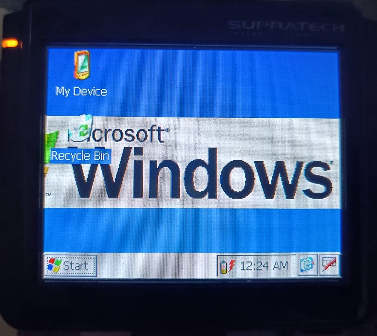

(soy demasiado vago para poner el texto en blanco y poner el fondo)
Hace unos años, mirando en un cajon, encontre esto:

Yo sabia que era un GPS, pero realmente no lo use para nada, solo lo usaba para tontear
Pero ademas, toqueteando la tarjeta SD en solo lectura, logre que saliera una ventanita del windows (no tengo una foto, pero creerme, paso)
Esa cosa corria Windows
Es muy simple, el GPS esta programado para cargar "MobileNavigator/MovileNavigator.exe" despues de la calibracion, asi es solo cambiarlo por el ejecutable del explorador de archivos, y ya esta, ya tienes windows
Y ya esta, para eso sirve, no hay conexion a Internet, el sistema operativo fue abandonado como hace 20 años, fin
O quizas... puede que haya alguna posibilidad?
Encontrar software para este GPS puede ser complicadete, el sistema operatio esta muerto y la mayoria de software fue actualizado por ultima vez como hace 15 años, una vez me encontre un wack-a-mole con gore que fue hecho en el 2000
Si quieres software, te recomiendo HPCFactor (necesitas una cuenta para descargar los programas)
Encontre una vez un link de archive.org con cientos de programas que mantengo, pero no encuentro el link ahora
Esta es mi lista de top 5 aplicaciones que recomiendo (y que encontre en el paquete)
Puesto que el GPS corre Windows CE y el PocketPC tambien, los juegos son binariamente compatibles entre si, aqui tienes a mi GPS corriendo Bejeweled 2

Ten en cuenta que muchos de los juegos tenian un periodo de prueba, en donde en varias ejectuaciones, te pedian pagar, el problema es que la mayoria de los creadores posiblemente esten retirados, puede que incluso muertos
Otro juego que probe fue Tangled Bugs, y... madre mia, es adictivo, ¡y ni siquiera hay lootboxs!
Creeme, con algunos de estos juegos, puedes pasar un buen rato
Asi es, esta cosa puede correr emuladores, aunque pocos.
El emulador que puedes probar es MorphGear, que emula
Como el emulador de GBA no funciona en el GPS, tuve que usar otro, y OH DIOS, iba horrible, totalmente injugable
Volviendo a MorphGear, iba bien, probe NES, GameGear, GameBoy y SNES, todas iban bien, execpto SNES, que parecia la musica de la pantalla de inicio de SMW era una nana para bebes
Ademas, como no habia teclado, tenia que usar el touchscreen para jugar, lo que no es muy comodo
Pero el gamepad virtual no soportaba mas de dos pulsaciones al mismo tiempo, asi queeeee... pues todo injugable
Por ultimo, quiero echarle un vistazo a las cosas multimedia, si transformas un video a .3gp, funciona perfectamente
La musica tambien funciona, aunque a baja calidad, no soy audiofilo ni nada, pero se nota que la calidad es baja
No sirve para nada
Yo soy permisivo con los trastos, pero, en serio, no le encuentro ninguna utilidad a esto
Los mobiles hacen esto muchisimo mejor que esto, y mil cosas mas
Como mucho, le encontraria utilidad a los juegos, ya que no conozco ningun dispositivo que pueda emular Windows CE (sin contar las pc portatiles como la Steam Deck)
Asi que nada, eso es todo, chau
,por cierto, si me encuentro al tio que hizo el wack-a-mole con gore, me tomo un selfie con el sin pensarlo, es mi idolo
Espera, lo ultimo que publico fue en 2007, si, este tio esta fuera del radar